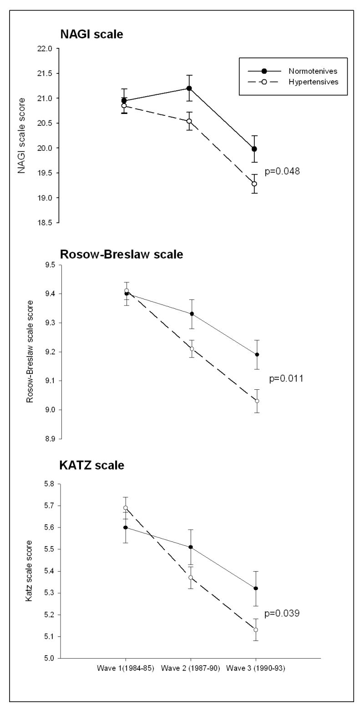
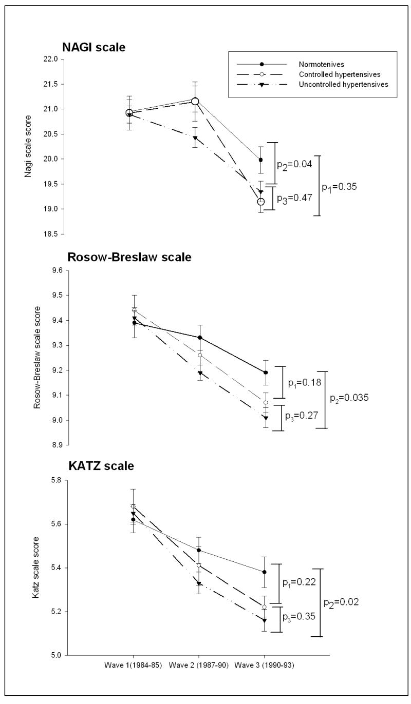

Abstract
The objective of this study was to investigate the association between blood pressure and disability in older adults. Stroke-free participants in the Charleston Heart Study (n=999, mean age= 68.5± standard error 0.2 years, 57% women, and 39% African Americans) were followed between 1960 and 1993. Functional measures including Nagi’s Congruency in Medical and Self Assessment of Disability scale, the Rosow-Breslaw scale and Katz’ Activities of Daily Living scale, in addition to systolic and diastolic blood pressures were collected in 1984–1985, 1987–1990, and 1990–1993. Additional systolic and diastolic blood pressures from 1960–63 were also available. We defined remote blood pressure change as the change from 1960 to 1984–85 and concurrent blood pressure change as the change from 1984–85 to the follow-up periods. Hypertension was defined as blood pressure ≥140/90 mm Hg or receiving antihypertensives, and it was considered uncontrolled if subjects were receiving antihypertensives and blood pressure ≥140/90 mm Hg. Greater remote and concurrent systolic blood pressure increases but not diastolic blood pressure were associated with greater declines in all three functional measures. Participants with hypertension were also at increased risk of developing new disability (hazard ratio= 1.28, 95% confidence interval (CI) (1.04–1.59) for Nagi scale, 1.28, 95%CI (1.02–1.59) for Rosow-Breslaw scale, and 1.3, 95%CI (1.01–1.69)) for Katz scale). Participants with uncontrolled hypertension were at greatest risk of disability compared to normotensives. In stroke-free older adults, remote and concurrent SBP increases are associated with greater functional decline. Older adults with uncontrolled hypertension are at a particularly increased risk for disability.
Keywords: Hypertension, disability, blood pressure, aged, southeast
Introduction
More than 50% of people 65 years or older in the US have limitation in at least one functional activity. Prior longitudinal studies have suggested that stroke is associated with increased risk for disability and loss of independence in older individuals. 1 2, 3 For example, in the Framingham Disability Study, stroke was the strongest predictor of physical disability and explained 12% of the variance over the follow-up period in men.4 The independent relationship between blood pressure (BP) or hypertension and disability risk in stroke free individuals is not known. This is especially important since more than 65% of older adults in the United States have hypertension.5 Further, the Framingham population is predominantly Caucasian, whereas African American elderly individuals are more likely to report limitations in activities of daily living (ADL) 6 and more likely to have hypertension.5 Therefore, investigating the relationship between BP and disability in a well-represented biracial population fills an important gap in our knowledge. Finally, the impact of BP on health takes a lengthy period of time. Therefore, it is important to consider BP years before individuals start showing evidence of functional decline and disability.
Controlling hypertension to below 140/90 mm Hg is associated with reduced cardiovascular disease mortality and morbidity in older adults.7 Investigating the association between hypertension control status and disability has important clinical implications since there are concerns that lowering BP may have a negative effect on function and quality of life in older adults.8
Therefore, the primary objective of this study was to investigate the association of BP and hypertension with the rate of functional decline and the risk of disability in an aging biracial population. The second objective was to explore the relation between hypertension control status and these disability domains.
Methods
Sample
A primary rationale for selecting the Charleston Heart Study was its adequate representation of African Americans. Also, we were interested in a study that includes remote BP data prior to the functional measures. The Charleston Heart Study fits these criteria. Participants were recruited from the community of greater Charleston, South Carolina in 1960. For this analysis we included data collected during 3 measurement waves: 1984–85, 1987–90, and 1990–93. We included participants who have available functional and BP data and excluded those with stroke at baseline and follow-up. Stroke data were collected using self-report. Of the 1040 participants evaluated in 1984–85, 38 had stroke and 3 had missing data leaving 999 available for this analysis. Of these, 978 (98%) were evaluated in 1987–90 and 916 (92%) in1990–93. An additional 39 individuals developed stroke during the follow-up period (1984–1993) and were also excluded. Additionally, BP and antihypertensive data 20 years prior to the 1984 wave were available on our selected sample. The Institutional Review Board at Hebrew SeniorLife approved this analysis. All participants signed written consents.
Data elements
Data collected included demographics, weight, height and social elements (educational level, marital status, retirement status, access to healthcare, alcohol and tobacco use). Self-reported comorbidity data were collected by an interview questionnaire and a medication inventory was also performed. Cognitive function was assessed using the Short Portable Mini Mental Examination starting in the 1987–1990 wave9. Mood was assessed using the Centre for Epidemiological Studies Depression scale10 collected only in 1990–1993.
Two BP measurements were obtained using a mercury manometer at each visit by a trained observer. The observers underwent repeated audiometric examinations. The participant was in a seated position and an appropriate size cuff was used. The cuff was placed at heart level and each reading was rounded to the nearest 2 mm Hg. Systolic blood pressure (SBP) was defined as the first Korotkoff sound (K1) and diastolic (DBP) as the fifth Korotkoff sound (K5). 11 For this analysis we used the mean of the two readings.
Blood pressure predictors
Our main predictors were SBP and DBP considered as continuous variables. Since BP changed over the study period as well as between 1960 and 1984–85, we designed our analysis to account for the change in BP. We defined two BP variables:
Concurrent BP change: this variable reflected the change in SBP and DBP from the baseline measurement (1984–85) to the follow-up periods (1987–90 and 1990–93). This was the concurrent change in BP measured at the same time as the outcome measures.
Remote BP change: This variable reflected the change in SBP and DBP from 1960 to the baseline measurements (1984–85)
Since some participants were receiving antihypertensives during the period of BP measurement, these readings may not reflect the participants’ actual BP. 12 In order to address this issue we have used a method suggested by Cui et al12 and confirmed by Tobin et al13 of adding 10 mm to SBP and 5 mm to DBP in individuals receiving antihypertensive medications during each data collection visit, for the BP analysis only. Please see http://hyper.ahajournals.org for an expanded methods and the results for the BP analysis without the treatment correction (Table S2).
Hypertension predictors
We also defined hypertension status and control status at baseline (1984–85) as predictor variables. We assigned each participant to one of two groups: normotensive if the mean BP was less than 140/90 mm Hg and the subject was not receiving antihypertensive medications or hypertensive if the mean BP was 140/90 mm Hg or greater or the subject was receiving antihypertensive medications.
We further assigned hypertensive individuals to two groups: controlled hypertensive if the mean BP was below 140/90 mm Hg with treatment and uncontrolled hypertensive if the mean BP was 140/90 mm Hg or greater.
To study the association of hypertension status with disability, we compared normotensives to hypertensives. To study the association between control status and disability, we compared controlled and uncontrolled hypertensives to normotensives and uncontrolled to controlled hypertensives.
Functional (outcome) measures
Measures of disability and daily function were collected in 1984–85, 1987–90, and 1990–9 using 3 standard scales: the Nagi’s Congruency in Medical and Self Assessment of Disability14, the Rosow-Breslaw scale15 and Katz’ Activities of Daily Living scale (ADL)16. We considered these measures of disability in this analysis in two ways: (a) As continuous variables to investigate the rate of change in functional abilities. (b) As categorical variables to investigate the risk of developing new disability: a participant is disabled if the participant reported limitation in performing at least one activity on the corresponding scale.
Statistical Analysis
Blood pressure analysis
We used Linear Mixed Effects Models (PROC Mixed) for correlated data to investigate the association between SBP and DBP with disability.17, 18 This procedure is less sensitive to missing data, allows us to model the change in predictors and covariates during the follow-up period, and calculates estimates of the functional measures at each visit adjusted for covariates.19 We first conducted univariate analyses by investigating the association between concurrent BP changes (independent variables) with functional measures as continuous variables (dependent variables). We then performed multivariate analyses by developing a Mixed Model for each outcome measure. The modeling process is provided in the online supplement. (Please see http://hyper.ahajournals.org.) For these analyses, we present the rate of change in the specific disability scale for each 10 mm Hg of BP increase obtained from the final models.
Hypertension analysis
For the comparison between hypertensives and normotensives and the comparison of the normotensives, controlled hypertensives, and uncontrolled hypertensives we also used Linear Mixed Effects Models. We also conducted univariate and multivariate analysis as in the BP analysis with hypertension status or control status as the independent variables and the functional measures as the dependent variables included as continuous variables. We present the results including p-values and least mean square (LMS) adjusted for the covariates from these models.
Risk of developing disability analysis
Proportional Hazard models20 were used to study the association between hypertension status and control status with the risk of developing disability. These models were developed using a stepwise model selection approach (forward/backward). For this analysis the time variable was either the time to developing disability or the time to censorship for the participants who were lost to follow-up or died. Proportional hazard Model assumptions were met.
We also calculated the cumulative incidence of disability for the follow-up period excluding those with disability at baseline (1984–1985), and the fraction of disability in the study population attributable to hypertension by calculating the population attributable risk percent (AR%). AR% is calculated by dividing the attributable risk by the incidence of disability in the study population.
Covariates and subgroup interaction analyses
For all analyses, covariates considered for model selection included age, gender, race, educational level, body mass index, baseline disability measures, alcohol, smoking status, comorbidity (coronary artery disease, myocardial infarction, subsequent stroke, diabetes mellitus, peripheral vascular disease, and arthritis).
Finally we tested for relevant interaction by age, gender, race, body mass index (BMI), and comorbidities. All analyses were conducted using SAS software (Cary, NC).
Results
Sample
The mean age ± standard error (SE) of the sample (n=999) at baseline was 68.5±0.2 years, 57% were women, and 39% were African Americans. Among these, 699 (70%) were hypertensive and 413 (59%) of the hypertensives were receiving antihypertensive medications. Only 146 (21%) were controlled to below 140/90 mm Hg. The control rates remained constant through the study follow-up (20% in 1987–90 and 21% in 1990–93).
Table 1 describes baseline characteristics of our sample. Hypertensive participants were older, more likely to be African Americans, had higher BMI, reported fewer years of education and had lower physical activity levels. Hypertensives reported higher prevalence of diabetes mellitus and arthritis than normotensives. There were no differences in cardiovascular disease or cognitive function between hypertensives and normotensives (Table 1). At baseline in 1984–85, hypertensive participants scored lower than normotensive participants on the Nagi scale. There was no difference in scores on the Rosow-Breslaw and Katz ADL scales. We provide a similar comparison for the baseline characteristics between normotensives, controlled and uncontrolled hypertensives in Table S1 in an online supplement. (Please see http://hyper.ahajournals.org.)
TABLE 1.
Baseline characteristics in stroke-free normotensive and hypertensive participants collected in 1984–85.
| Characteristic | Normotensive | Hypertensive | p-value |
|---|---|---|---|
| N | 300 | 699 | |
| Age (Mean±SE), years | 67.6±0.5 | 68.9±0.3 | 0.0137 |
| Women, N (%) | 163 (54%) | 409 (58%) | 0.2210 |
| African Americans, N (%) | 86 (28%) | 310 (44%) | <0.0001 |
| Body mass index (Mean±SE), Kg/m2 | 24.36±0.26 | 26.88±0.22 | <0.0001 |
| Systolic blood pressure (Mean±SE), mm Hg | 124.3±0.6 | 149.2±0.7 | <0.0001 |
| Diastolic blood pressure (Mean±SE), mm Hg | 75.6±0.5 | 86.1±0.5 | <0.0001 |
| Education (Mean±SE), years | 9.8±0.1 | 9.3±0.1 | <0.0001 |
| No access to healthcare past year, N (%) | 40 (13%) | 68 (10%) | 0.0940 |
| Retired, N (%)* | 169 (69%) | 387 (72%) | 0.4428 |
| Marital status, % (married or housemate, divorced Separated or widowed) | 64%,36% | 59%,41% | 0.1212 |
| Smoking,% (current, past) | 21%, 34% | 18%, 31% | 0.3193 |
| Alcohol, % (current, past) | 54%, 17% | 52%,15% | 0.3685 |
| Performed regular physical activity past year, N (%) | 195 (65%) | 397 (57%) | 0.014 |
| Comorbidities | |||
| Diabetes Mellitus, N (%) | 43 (14%) | 156 (22%) | 0.0038 |
| Coronary artery disease, N (%) | 36 (12%) | 116 (16%) | 0.0638 |
| Peripheral vascular disease, N (%) | 8 (3%) | 33 (5%) | 0.1335 |
| Angina, N (%) | 24 (8%) | 57 (8%) | 0.9289 |
| Myocardial infarction, N (%) | 26 (9%) | 71 (10%) | 0.4657 |
| Kidney disease, N (%) | 44 (15%) | 125 (18%) | 0.2139 |
| Arthritis, N (%) | 151 (50%) | 424 (61%) | 0.0025 |
| Fasting glucose, mg/dl† | 104±2 | 120±3 | 0.0001 |
| CESD‡ (Mean±SE) | 8±1 | 11±1 | 0.0003 |
| Short Portable Mini Mental Exam† (Mean±SE) | 9.8±0.1 | 9.3±0.1 | 0.2333 |
| Nagi scale | 21.3±0.4 | 20.1±0.2 | 0.032 |
| Rosow-Breslaw scale | 9.4±0.1 | 9.3±0.04 | 0.176 |
| Katz ADL scale | 5.6±0.1 | 5.6±0.04 | 0.662 |
SE: standard error, CESD: Center for Epidemiologic Studies Depression Scale. ADL: activities of daily living
: Retired information was missing on 215 participants
: Collected in 1987–90
: Collected in 1990–93 only
Blood pressure analysis
Table 2 describes the association between remote and concurrent BP change and the rate of functional measure change. Greater remote SBP increase was associated with greater decline rates in all three functional measures. Similarly, greater concurrent SBP increase was associated with greater decline rates in all three functional measures. This remained true in the multivariate models. In contrast, remote and concurrent DBP changes were not associated with any of the outcome measures. (Table 2) These results did not change when we considered SBP and DBP without correction for the effect of antihypertensives. (Please see http://hyper.ahajournals.org.)
Table 2.
Unadjusted and adjusted association between remote and concurrent blood pressure changes and the rate of change in the functional measures.
| Functional measure | Rate of change (β) in functional measure during the study period | |||||||
|---|---|---|---|---|---|---|---|---|
| Unadjusted | Adjusted* | |||||||
| Remote SBP Change | Concurrent SBP change | Remote SBP change | Concurrent SBP change | |||||
| β† | P | β† | P | β† | P | β† | P | |
| Nagi scale | −3.4 ± 0.7 | <0.0001 | −0.9 ± 0.6 | 0.14 | −1.3 ± 0.6 | 0.044 | −1.2 ± 0.6 | 0.038 |
| Rosow-Breslaw scale | −0.8 ± 0.1 | <0.0001 | −0.2 ± 0.1 | 0.03 | −0.3 ± 0.1 | 0.017 | −0.3 ± 0.1 | 0.018 |
| ADL Katz scale | −0.7 ± 0.1 | <0.0001 | −0.3 ± 0.1 | 0.07 | −0.3 ± 0.1 | 0.02 | −0.5 ± 0.2 | 0.002 |
| Remote DBP Change | Concurrent DBP change | Remote DBP change | Concurrent DBP change | |||||
| Nagi scale | −5.3 ± 1.1 | <0.0001 | −1.1 ± 0.8 | 0.15 | −1.7 ± 1.1 | 0.10 | −1.1 ± 0.8 | 0.19 |
| Rosow-Breslaw scale | −1.3 ± 0.2 | <0.0001 | −0.2 ± 0.1 | 0.19 | −0.07 ± 0.2 | 0.73 | −0.2 ± 0.2 | 0.24 |
| ADL Katz scale | −0.9 ± 0.2 | <0.0001 | −0.3 ± 0.2 | 0.10 | 0.1 ± 0.2 | 0.5 | −0.2 ± 0.2 | 0.20 |
SBP: systolic blood pressure, DBP: diastolic blood pressure. ADL: activities of daily living
: Covariates include: age, gender, race, BMI, education level, smoking status, physical activity, diabetes mellitus, arthritis and cardiovascular disease
: β is the slope of change in functional measure per 10 mm Hg change in systolic or diastolic blood pressure
Hypertension analysis
Compared to normotensive participants, hypertensive participants demonstrated greater declines in all three functional measures. This remained true in the multivariate models after adjusting for potential confounders (Figure 1). When we investigated the association between hypertension control status and functional measures we found that uncontrolled hypertensive participants demonstrated greater declines in all measures compared to normotensive participants. However, they did not differ significantly from controlled hypertensives (Figure 2).
Figure 1.

Change in functional outcome measures over the follow-up period in normotensives and hypertensive participants.
Footnote:
Estimates at each wave are the least square mean from the final Proc Mixed models with covariate adjustments: age, race, BMI, education, baseline measure, physical activity, and comorbidities. P-values are also from the Proc Mixed procedure testing the hypothesis Hº: rates of change in the outcome measures are different between the hypertensive and normotensives participants
Figure 2.

Change in functional outcome measures over the follow-up period in normotensives, controlled hypertensive, and uncontrolled hypertensive participants
Footnote: Estimates at each wave are the least square mean from the final Proc Mixed models with covariate adjustments (age, race, BMI, education, baseline measure, physical activity, and comorbidities. P-values are from the Proc Mixed procedure testing the hypotheses Hº: rate of change is different between normotensives and controlled hypertensives (p1), rate of change is different between normotensives and uncontrolled hypertensives (p2), and rate of change is different between controlled and uncontrolled hypertensives (p3).
Risk of disability analysis
Table 3 provides the results obtained from the Cox Proportional Hazards models. Compared to normotensive participants, hypertensive participants without baseline disability were at increased risk of developing new disability during the follow-up period (Table 3). The attributable risk percent (AR%) of hypertension on disability was 15% for the Nagi scale, 36% for the Rosow-Breslaw scale, and 22% ;for the Katz ADL scale.
TABLE 3.
Cox proportional hazard risk of developing disability in hypertensive and in controlled and uncontrolled hypertensive participants.
| Functional measure | N | Incidence* | Unadjusted | Adjusted† | ||
|---|---|---|---|---|---|---|
| HR | CI | HR | CI | |||
| Nagi scale | ||||||
| Normotensive | 300 | 20.7% | 1 | ref | ||
| Hypertensive | 699 | 24.3% | 1.35 | (1.13–1.63) | 1.28 | (1.04–1.59) |
| Normotensive | 300 | 20.7% | 1 | ref | ||
| Controlled hypertensives | 140 | 21.6% | 1.27 | (0.97–1.66) | 1.25 | (0.98–1.71) |
| Uncontrolled hypertensives | 559 | 32.1% | 1.37 | (1.14–1.66) | 1.29 | (1.04–1.62) |
| Rosow-Breslaw | ||||||
| Normotension | 300 | 22.0% | 1 | ref | ||
| Hypertension | 699 | 34.3% | 1.39 | (1.15–1.68) | 1.28 | (1.02–1.59) |
| Normotensive | 300 | 22.0% | 1 | ref | ||
| Controlled hypertensive | 140 | 28.6% | 1.23 | (0.98–1.63) | 1.17 | (0.85–1.62) |
| Uncontrolled hypertensive | 559 | 38.8% | 1.43 | (1.18–1.74) | 1.3 | (1.03–1.63) |
| Katz ADL scale | ||||||
| Normotension | 300 | 24.0% | 1 | ref | ||
| Hypertension | 699 | 31.0% | 1.33 | (1.07–1.66) | 1.3 | (1.01–1.69) |
| Normotensive | 300 | 24.0% | 1 | ref | ||
| Controlled hypertensive | 140 | 27.6% | 1.28 | (0.92–1.76) | 1.16 | (0.79–1.69) |
| Uncontrolled hypertensive | 559 | 31.9% | 1.35 | (1.07–1.69) | 1.35 | (1.03–1.77) |
ADL: activities of daily living. HR: Hazard Ratio. CI: Confidence Interval
: Cumulative Incidence is the number of individuals who develop disability/individuals without disability at baseline.
: Adjustment included: age, race, BMI, education, physical activity, and comorbidities.
Participants with uncontrolled hypertension were at increased risk of developing disability compared to normotensives. However, those with controlled hypertension, defined as BP less than 140/90 mm Hg with treatment, had no significant difference in disability risk compared to normotensives or uncontrolled hypertensives. (Table 3) This was true for all three functional measures. AR% for uncontrolled hypertensives compared to normotensive participants was 36% for the Nagi scale, 63% for the Rosow-Breslaw, and 25% for the Katz ADL.
Subgroup interaction analysis
Table 4 provides the results of Cox Proportional Hazard models with an interaction term to test whether there was a different association between hypertension and disability by various subgroups. There was only a gender-based difference in the association between hypertension and disability. Women had a significantly increased risk of developing disability from hypertension compared to men based on the Rosow Breslaw scale and the Katz ADL scale but not the Nagi scale (Table 4). There were no consistent differences in the risk of developing disability from hypertension by age, race, obesity or other comorbidities.
TABLE 4.
Exploring the difference in the association between hypertension at baseline and the risk of disability by age, race, gender, body mass index and comorbidities
| Outcome | Hazard Ratio* | 95% confidence interval |
|---|---|---|
| Age (reference are those younger than 75) | ||
| Nagi scale | 0.73 | (0.46–1.14) |
| Rosow-Breslaw scale | 0.67 | (0.43–1.02) |
| Katz ADL scale | 0.73 | (0.45–1.18) |
| Gender (men were reference) | ||
| Nagi scale | 1.28 | (0.87–1.88) |
| Rosow-Breslaw scale | 1.80 | (1.22–2.66) |
| Katz ADL scale | 1.99 | (1.26–3.17) |
| Race (whites were reference) | ||
| Nagi scale | 1.28 | (0.86–1.93) |
| Rosow-Breslaw scale | 1.08 | (0.72–1.62) |
| Katz ADL scale | 1.24 | (0.76–2.02) |
| Obesity (less than 25 BMI as reference) | ||
| Nagi scale | 0.49 | (0.17–1.42) |
| Rosow-Breslaw scale | 0.19 | (0.07–0.52) |
| Katz ADL scale | 0.41 | (0.12–1.41) |
| Cardiovascular disease | ||
| Nagi scale | 0.81 | (0.50–1.32) |
| Rosow-Breslaw scale | 0.87 | (0.54–1.42) |
| Katz ADL scale | 0.83 | (0.46–1.47) |
| Diabetes Mellitus | ||
| Nagi scale | 1.25 | (0.77–2.03) |
| Rosow-Breslaw scale | 1.37 | (0.83–2.28) |
| Katz ADL scale | 1.27 | (0.72–2.23) |
| Arthritis/Pain | ||
| Nagi scale | 1.08 | (0.74–1.58) |
| Rosow-Breslaw scale | 1.14 | (0.77–1.67) |
| Katz ADL scale | 1.21 | (0.77–1.90) |
CVD: Cardiovascular disease (myocardial infarction, angina, stroke, or peripheral vascular disease). ADL: activities of daily living
: These Hazard Ratios are testing the hypothesis that there is a difference in the association between hypertension and disability risk by the corresponding subgroup. It calculates the additional risk in that subgroup compared to the reference group. For example, the risk of disability based on the Rosow-Breslaw scale associated with hypertension in women is 1.8 times that in men.
Discussion
This study suggests that in a biracial elderly population, concurrent and remote SBP increases are associated with greater rates of decline in functional abilities. In contrast, neither remote nor concurrent DBP were associated with functional declines. In addition, those with hypertension at baseline have greater declines in functional abilities and are at increased risk of developing new disability compared to normotensive individuals. Only those with uncontrolled hypertension have greater declines in functional abilities and are at increased disability risk.
Few prior studies have investigated the role of BP or hypertension in developing disability.4, 21 Hubert et al identified hypertension as one risk of an array of factors for the development of disability over a period of 6 years in a group of 407 members of a runners club.22 In the Framingham Disability Study, hypertension was associated with an increased risk of disability.3 The populations in both studies were predominantly Caucasians and hence generalizability is limited. Our study extends these findings to a sample that, unlike the Framingham study, adequately represented African Americans. Moreover, none of the prior studies investigated the role of SBP and DBP measured during the study period or remotely prior to the development of disability on the rate functional loss in an elderly population. Our analysis suggests that SBP plays a role in the loss of function, but DBP does not. This is in agreement with prior evidence suggesting that SBP is a better predictor of future cardiovascular and cerebrovascular disease in elderly individuals than DBP. 23 Nevertheless, hypertensives as a group are at increased risk of both functional decline and developing new disability.
This analysis suggests that those with uncontrolled hypertension had an increased risk of incident disability, whereas those with controlled hypertension had a similar incident disability as those without hypertension. The lack of association between controlled hypertension and disability risk suggests that adequate control of hypertension may prevent functional decline. However, this could also be related to the small sample size of those with controlled hypertension. These findings should be interpreted cautiously and need to be replicated in other studies with larger samples.
Women are more likely to develop disability compared to men. 24, 25 In this study we found that compared to men, women are particularly at an increased risk of developing disability from hypertension. Since hypertension is more prevalent in women5, this may provide a possible explanation for the increased predisposition to disability in women.
The development of disability with aging is a complex process and involves interactions between the individual’s abilities and the surrounding environment. 26 Contrary to previous thought that disability was due to disabling medical illnesses, recent literature emphasizes a conceptual difference between comorbidity and disability.27 We found an association between hypertension and measures of disability, which was robust to adjustment for self-reported relevant co-morbidities including Diabetes Mellitus, cardiovascular disease and arthritis. The mechanisms by which hypertension may produce disability are not known. It is possible that hypertension may lead to disability through its effect on white matter hyperintensities in the brain28, cerebrovascular function,29 overall lean muscle mass, 30, 31 inflammation or changes in the renin angiotensin system.32, 33 It also could be mediated through the effect of hypertension on cognitive function not assessed in the Charleston Heart Study, such as executive function34 or fluid intellectual functioning.35 Further studies to explore these possible mechanisms are needed.
An advantage of our study population is the low rate of hypertension control, which enabled us to assess the association between uncontrolled hypertension and disability. Also, the sample had close to 40% Southeastern African Americans, who were underrepresented in prior studies.
A limitation of our study is that our sample was not disability free at baseline. We conducted 2 analyses: one investigating the rate of functional decline and the second investigating the risk of developing new disability in those without disability at baseline. Both approaches lead to similar results. Another limitation is that all functional measures were self-reported. These measures have been widely used for assessing disability in the general population. Further, comorbidity assessment was conducted using self-report via an interview. In particular, there was no further objective confirmation for the diagnosis of stroke. Although this method has been validated for stroke diagnosis36, our results should be interpreted cautiously. Also, measures of cognitive function and mood were not conducted except in the later period of the study. Since BP and disability are related to both, interpretation of our results should take this into consideration.
Higher concurrent and 20 years prior SBP increases are associated with an increased rate of functional decline in older adults. In addition those with hypertension, particularly uncontrolled hypertension, have a significant increase in disability risk, independent of other risk factors or comorbidities.
Perspective
This study suggests an association between elevated systolic BP and hypertension with disability in older adults. Considering that 65% of the elderly population has hypertension and that 71% of them are uncontrolled, hypertension is contributing significantly to disability and to healthcare expenditure in the US. Further investigation on the underlying mechanism of this association and clinical trials to test the effect of controlling hypertension on disability are essential future research areas.
Supplementary Material
Acknowledgments
Sources of funding:
Dr. Hajjar was supported by Society of Geriatric Cardiology Research Award and the Hartford Center of Excellence career development award.
Dr. Lackland was supported by grant 1R01HL072377 from the National Institute of Health
Dr. Lipsitz holds the Irving and Edyth S. Usen Chair in Geriatric Medicine at Hebrew SeniorLife. He was also supported by grants AG004390, AG08812, and AG005134 from the National Institute on Aging, Bethesda, MD.
Footnotes
Author Disclosures:
Dr’s Hajjar, Lipsitz, Cupples: none.
Dr. Lackland is on the Speakers’ Bureau for Novartis, Bristol-Myers Squibb, Merck and Pfizer and has received research support from Novartis.
Contributor Information
Daniel Lackland, Medical University of South Carolina.
L. Adrienne Cupples, Boston University.
Lewis A. Lipsitz, Harvard Medical School, Beth Israel Deaconess Medical Center, Hebrew SeniorLife.
References
- 1.Tas U, Verhagen AP, Bierma-Zeinstra SM, Hofman A, Odding E, Pols HA, Koes BW. Incidence and risk factors of disability in the elderly: the Rotterdam Study. Prev Med. 2007;44:272–278. doi: 10.1016/j.ypmed.2006.11.007. [DOI] [PubMed] [Google Scholar]
- 2.Ebrahim S, Wannamethee SG, Whincup P, Walker M, Shaper AG. Locomotor disability in a cohort of British men: the impact of lifestyle and disease. Int J Epidemiol. 2000;29:478–486. [PubMed] [Google Scholar]
- 3.Pinsky JL, Branch LG, Jette AM, Haynes SG, Feinleib M, Cornoni-Huntley JC, Bailey KR. Framingham Disability Study: relationship of disability to cardiovascular risk factors among persons free of diagnosed cardiovascular disease. Am J Epidemiol. 1985;122:644–656. doi: 10.1093/oxfordjournals.aje.a114144. [DOI] [PubMed] [Google Scholar]
- 4.Jette AM, Pinsky JL, Branch LG, Wolf PA, Feinleib M. The Framingham Disability Study: physical disability among community-dwelling survivors of stroke. J Clin Epidemiol. 1988;41:719–726. doi: 10.1016/0895-4356(88)90157-6. [DOI] [PubMed] [Google Scholar]
- 5.Hajjar I, Kotchen TA. Trends in prevalence, awareness, treatment, and control of hypertension in the United States, 1988–2000. Jama. 2003;290:199–206. doi: 10.1001/jama.290.2.199. [DOI] [PubMed] [Google Scholar]
- 6.National Center for Health Statistics (U.S.) Health, United States. 2006 [cited; CD-ROMs]. Available from: http://purl.access.gpo.gov/GPO/LPS2649. [PubMed]
- 7.Staessen JA, Gasowski J, Wang JG, Thijs L, Den Hond E, Boissel JP, Coope J, Ekbom T, Gueyffier F, Liu L, Kerlikowske K, Pocock S, Fagard RH. Risks of untreated and treated isolated systolic hypertension in the elderly: meta-analysis of outcome trials. Lancet. 2000;355:865–872. doi: 10.1016/s0140-6736(99)07330-4. [DOI] [PubMed] [Google Scholar]
- 8.Goodwin JS. Embracing Complexity: A Consideration of Hypertension in the Very Old. J Gerontol A Biol Sci Med Sci. 2003;58:M653–658. doi: 10.1093/gerona/58.7.m653. [DOI] [PubMed] [Google Scholar]
- 9.Pfeiffer E. A short portable mental status questionnaire for the assessment of organic brain deficit in elderly patients. J Am Geriatr Soc. 1975;23:433–441. doi: 10.1111/j.1532-5415.1975.tb00927.x. [DOI] [PubMed] [Google Scholar]
- 10.Weissman MM, Sholomskas D, Pottenger M, Prusoff BA, Locke BZ. Assessing depressive symptoms in five psychiatric populations: a validation study. Am J Epidemiol. 1977;106:203–214. doi: 10.1093/oxfordjournals.aje.a112455. [DOI] [PubMed] [Google Scholar]
- 11.Boyle E., Jr Biological pattern in hypertension by race, sex, body weight, and skin color. Jama. 1970;213:1637–1643. [PubMed] [Google Scholar]
- 12.Cui JS, Hopper JL, Harrap SB. Antihypertensive treatments obscure familial contributions to blood pressure variation. Hypertension. 2003;41:207–210. doi: 10.1161/01.hyp.0000044938.94050.e3. [DOI] [PubMed] [Google Scholar]
- 13.Tobin MD, Sheehan NA, Scurrah KJ, Burton PR. Adjusting for treatment effects in studies of quantitative traits: antihypertensive therapy and systolic blood pressure. Stat Med. 2005;24:2911–2935. doi: 10.1002/sim.2165. [DOI] [PubMed] [Google Scholar]
- 14.Nagi SZ. An epidemiology of disability among adults in the United States. Milbank Mem Fund Q Health Soc. 1976;54:439–467. [PubMed] [Google Scholar]
- 15.Rosow I, Breslau N. A Guttman health scale for the aged. J Gerontol. 1966;21:556–559. doi: 10.1093/geronj/21.4.556. [DOI] [PubMed] [Google Scholar]
- 16.Katz S, Downs TD, Cash HR, Grotz RC. Progress in development of the index of ADL. Gerontologist. 1970;10:20–30. doi: 10.1093/geront/10.1_part_1.20. [DOI] [PubMed] [Google Scholar]
- 17.Littell RC, Henry PR, Ammerman CB. Statistical analysis of repeated measures data using SAS procedures. J Anim Sci. 1998;76:1216–1231. doi: 10.2527/1998.7641216x. [DOI] [PubMed] [Google Scholar]
- 18.Littell RC. SAS system for mixed models. Cary, N.C.: SAS Institute Inc.; 1996. [Google Scholar]
- 19.Wolfinger RD. An example of using mixed models and PROC MIXED for longitudinal data. J Biopharm Stat. 1997;7:481–500. doi: 10.1080/10543409708835203. [DOI] [PubMed] [Google Scholar]
- 20.Liang KY, Self SG, Liu XH. The Cox proportional hazards model with change point: an epidemiologic application. Biometrics. 1990;46:783–793. [PubMed] [Google Scholar]
- 21.Ettinger WH, Jr, Fried LP, Harris T, Shemanski L, Schulz R, Robbins J. Self-reported causes of physical disability in older people: the Cardiovascular Health Study. CHS Collaborative Research Group. J Am Geriatr Soc. 1994;42:1035–1044. doi: 10.1111/j.1532-5415.1994.tb06206.x. [DOI] [PubMed] [Google Scholar]
- 22.Hubert HB, Fries JF. Predictors of physical disability after age 50. Six-year longitudinal study in a runners club and a university population. Ann Epidemiol. 1994;4:285–294. doi: 10.1016/1047-2797(94)90084-1. [DOI] [PubMed] [Google Scholar]
- 23.Applegate WB. The relative importance of focusing on elevations of systolic vs diastolic blood pressure. A definitive answer at last. Arch Intern Med. 1992;152:1969–1971. [PubMed] [Google Scholar]
- 24.Strawbridge WJ, Kaplan GA, Camacho T, Cohen RD. The dynamics of disability and functional change in an elderly cohort: results from the Alameda County Study. J Am Geriatr Soc. 1992;40:799–806. doi: 10.1111/j.1532-5415.1992.tb01852.x. [DOI] [PubMed] [Google Scholar]
- 25.Strawbridge WJ, Cohen RD, Shema SJ, Kaplan GA. Successful aging: predictors and associated activities. Am J Epidemiol. 1996;144:135–141. doi: 10.1093/oxfordjournals.aje.a008900. [DOI] [PubMed] [Google Scholar]
- 26.World Health Organization. International classification of functioning, disability and health : ICF. Geneva: World Health Organization; 2001. [Google Scholar]
- 27.Chamie M. What does morbidity have to do with disability? Disabil Rehabil. 1995;17:323–337. doi: 10.3109/09638289509166718. [DOI] [PubMed] [Google Scholar]
- 28.van Dijk EJ, Breteler MM, Schmidt R, Berger K, Nilsson LG, Outer M, Pajak A, Sans S, de Ridder M, Dufouil C, Fuhrer R, Giampaoli S, Launer LJ, Hofman A. The association between blood pressure, hypertension, and cerebral white matter lesions: cardiovascular determinants of dementia study. Hypertension. 2004;44:625–630. doi: 10.1161/01.HYP.0000145857.98904.20. [DOI] [PubMed] [Google Scholar]
- 29.Sierra C, de la Sierra A, Chamorro A, Larrousse M, Domenech M, Coca A. Cerebral hemodynamics and silent cerebral white matter lesions in middle-aged essential hypertensive patients. Blood Press. 2004;13:304–309. doi: 10.1080/08037050410024448. [DOI] [PubMed] [Google Scholar]
- 30.Pahor M, Kritchevsky S. Research hypotheses on muscle wasting, aging, loss of function and disability. J Nutr Health Aging. 1998;2:97–100. [PubMed] [Google Scholar]
- 31.Visser M, Harris TB, Langlois J, Hannan MT, Roubenoff R, Felson DT, Wilson PW, Kiel DP. Body fat and skeletal muscle mass in relation to physical disability in very old men and women of the Framingham Heart Study. J Gerontol A Biol Sci Med Sci. 1998;53:M214–221. doi: 10.1093/gerona/53a.3.m214. [DOI] [PubMed] [Google Scholar]
- 32.McDermott MM, Guralnik JM, Greenland P, Green D, Liu K, Ridker PM, Chan C, Criqui MH, Ferrucci L, Taylor LM, Pearce WH, Schneider JR, Oskin SI. Inflammatory and thrombotic blood markers and walking-related disability in men and women with and without peripheral arterial disease. J Am Geriatr Soc. 2004;52:1888–1894. doi: 10.1111/j.1532-5415.2004.52514.x. [DOI] [PubMed] [Google Scholar]
- 33.Onder G, Penninx BW, Balkrishnan R, Fried LP, Chaves PH, Williamson J, Carter C, Di Bari M, Guralnik JM, Pahor M. Relation between use of angiotensin-converting enzyme inhibitors and muscle strength and physical function in older women: an observational study. Lancet. 2002;359:926–930. doi: 10.1016/s0140-6736(02)08024-8. [DOI] [PubMed] [Google Scholar]
- 34.Kuo HK, Sorond F, Iloputaife I, Gagnon M, Milberg W, Lipsitz LA. Effect of blood pressure on cognitive functions in elderly persons. J Gerontol A Biol Sci Med Sci. 2004;59:1191–1194. doi: 10.1093/gerona/59.11.1191. [DOI] [PMC free article] [PubMed] [Google Scholar]
- 35.Elias MF, Robbins MA, Elias PK, Streeten DH. A longitudinal study of blood pressure in relation to performance on the Wechsler Adult Intelligence Scale. Health Psychol. 1998;17:486–493. doi: 10.1037//0278-6133.17.6.486. [DOI] [PubMed] [Google Scholar]
- 36.Bush TL, Miller SR, Golden AL, Hale WE. Self-report and medical record report agreement of selected medical conditions in the elderly. Am J Public Health. 1989;79:1554–1556. doi: 10.2105/ajph.79.11.1554. [DOI] [PMC free article] [PubMed] [Google Scholar]
Associated Data
This section collects any data citations, data availability statements, or supplementary materials included in this article.